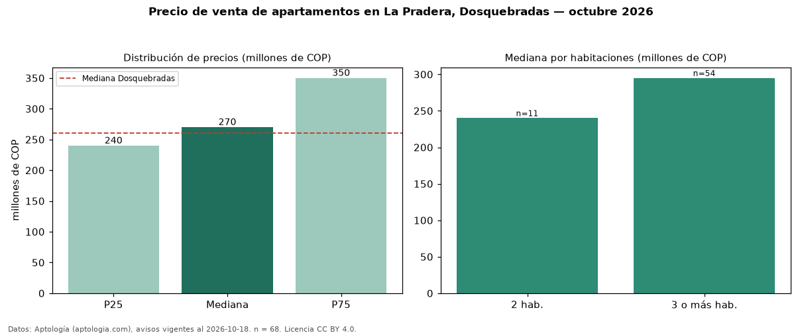

Precio de venta de apartamentos en La Pradera, Dosquebradas — octubre 2026
Con 68 avisos vigentes, el precio mediano de apartamentos en venta en La Pradera, Dosquebradas es COP 270 millones. Prácticamente coincide con la mediana de Dosquebradas para apartamentos (COP 260 millones). Por metro cuadrado, la mediana es COP 4,72 millones/m² (n = 67 avisos con área), 2 % por encima de Dosquebradas (COP 4,63 millones/m²). El área mediana anunciada es 58 m². El segmento con más oferta es el de 3 o más habitaciones (54 avisos, mediana COP 295 millones); pasar de 2 habitaciones a 3 o más habitaciones cambia la mediana +23 %. La administración mediana declarada es COP 250.000 al mes (n = 31). El estrato más frecuente es 4 (70 % de los avisos con estrato). La mitad central de los avisos va de COP 240 millones a COP 350 millones (razón 1,5), una dispersión moderada. Datos: Aptología (aptologia.com), CC BY 4.0 — https://www.aptologia.com/venta/dosquebradas/la-pradera. Archivos: PDF, CSV con las cifras y gráfica PNG.

| Avisos únicos | 68 |
|---|---|
| Percentil 25 | COP 240.000.000 |
| Mediana | COP 270.000.000 |
| Percentil 75 | COP 350.000.000 |
| Mediana por m² | COP 4.716.981 |
Fuente: avisos vigentes de portales inmobiliarios recopilados por Aptología, deduplicados (mínimo 30 avisos únicos por celda). Precios pedidos, no cerrados. Fecha: 2026-10-18.